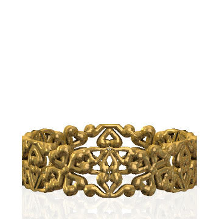

Description
This design draws inspiration from the traditional Indonesian Tumpal motif, which is tiled and arranged using {4.4} tessellation, ${3, 6}$ tessellation, and octagon square semiregular tessellation. Additional shapes such as squares and octagons are constructed from smaller rectangles. Each individual triangle in the design is embellished with a wave-like pattern known as "isen." The intricate wave pattern is meticulously crafted using a combination of cubic Bezier curves and spirals. Notably, the spiral component is designed to ensure that the curve is tangent to the perimeter of the triangle, contributing a dynamic and harmonious element to the overall motif.
Tumpal is triangle shaped pattern, usually filled with isen. In this motive, Tumpal is decorated with wave like pattern that is tangent to the triangle Outline.
Math Concept
This wave-like isen is crafted through a combination of a spiral and a cubic Bezier curve. The spiral is meticulously arranged to be tangent to the perimeter of each triangle. The equation defining the center of the spiral can be expressed as:
\( x_c = 0.5 w - \frac{R}{tan(\theta/2)} \)
\( y_c = R \)
How to Draw
-
Given triangle ABC, draw an angular bisector line that divides angle α into two equal parts
-
Draw a semicircle centered on any point of the angular bisector line. The radius of the semicircle is the distance between the points and the base.
-
Draw another semicircle centered at the same X-coordinate but half of the Y-coordinate. The radius should be half of the previous semicircle.
-
Draw a curvy wave to the origin
Exhibit
Presenting the Tumpal Ring by The Geometry of Batik Team. With the mathematical model in hand, creating a 3D model becomes a straightforward process. The resulting 3D model serves as the foundation for crafting this necklace using the lost wax casting method in our exhibit